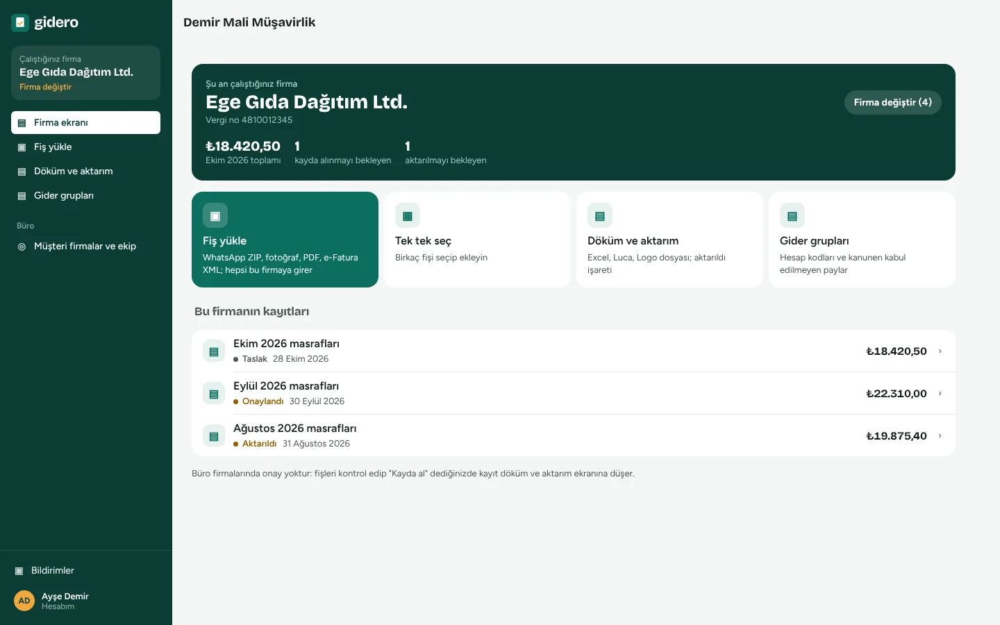
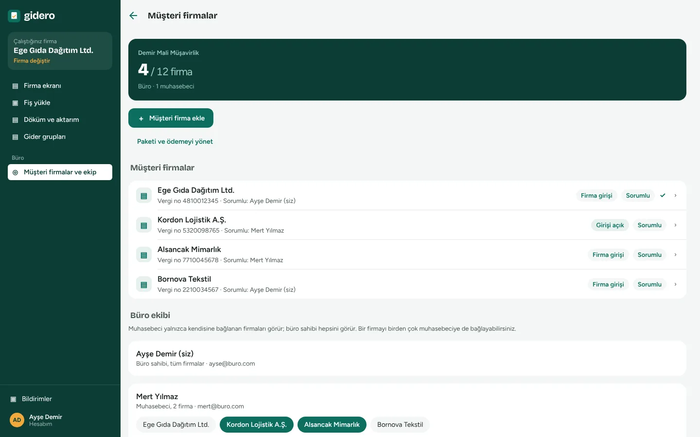

Ana sayfa / Muhasebe büroları için
Müşterinizin fişleri WhatsApp'tan gelsin, kayda Gidero geçirsin.
Fiş fotoğraflarını tek tek yazmayı bırakın. Sohbeti dışa aktarıp yükleyin; Gidero fişleri ayıklar, okur, vergi riskini işaretler ve yevmiye kaydını hazırlar. Siz kontrol edip "Kayda al" dersiniz.

Bir ayın fişleri, birkaç dakikada
- Müşteri her zamanki gibi gönderirFotoğraf, PDF, e-Fatura XML; hepsi WhatsApp sohbetinde.
- Sohbeti ZIP olarak dışa aktarırsınızFirmayı seçip "Fiş yükle" deyin; ZIP içindeki bütün belgeler ayıklanır.
- Gidero okur ve uyarırTutar, tarih, satıcı, KDV oranları; fatura sınırı, mükerrer fiş, şirket adına kesilmemiş belge, alkol, binek araç.
- Kayda alır, aktarırsınızOnay yok; kontrol edip kayda alırsınız. Döküm ekranından Excel, Logo ya da Luca dosyası iner.
38 belge bulundu · 36'sı okundu · 2'sinde tutar elle yazılacak · 1 mükerrer fiş ayrıldı

Her firma ayrı, ekibiniz düzenli
- Firma değiştir, devam etBir firmanın fişlerini bitirin, üstten diğerine geçin. Her firmanın verisi ayrıdır.
- Muhasebecilerinize firma bağlayınMuhasebeci yalnızca kendisine bağlı firmaları görür; büro sahibi hepsini.
- İsterseniz firmaya kendi girişiMüşteriniz kendi fişlerini telefonla çeker, kendi onay zincirinden geçirir, giderlerini görür. Muhasebe ve aktarım sizde kalır; açıp kapatmak sizin elinizde.
Yevmiye kaydı hazır gelir
Her fiş Tekdüzen Hesap Planı'na göre gider, KDV ve karşı hesap satırlarına ayrılır. Yazar kasa fişinde indirilemeyen KDV, binek araçta kabul edilmeyen pay ve alkol kararları ayrı satırda.
Excel dökümü bugün hazır ve her programa aktarılabilir. Logo ve Luca biçimleri pilot bürolarla doğrulanıyor; Mikro, Netsis, Zirve ya da ETA kullanıyorsanız örnek aktarım dosyanızı gönderin, biçimi sizin programınıza göre ekleyelim.
Örnek: 1.100 TL restoran faturası, %10 KDV, çalışan ödedi
| Hesap | Borç | Alacak |
|---|---|---|
| 770.01 Genel yönetim, yemek | 1.000,00 | |
| 191.10 İndirilecek KDV %10 | 100,00 | |
| 335.0042 Personele borçlar | 1.100,00 |
Riskli belgeyi kayda girmeden görün
Fatura sınırı
Aynı gün aynı satıcıdan yazar kasa fişiyle sınırı aşan harcama işaretlenir; sınır yıl bazında güncellenir.
Mükerrer belge
Aynı görsel, aynı ETTN ya da aynı satıcı ve belge numarası ikinci kez gelirse ayrılır.
Şirket adına mı?
Faturadaki alıcı VKN'si firmanınkiyle karşılaştırılır.
Binek araç
Kabul edilmeyen pay ve KDV'si ayrı satıra yazılır; oran şirket ayarından.
Alkol
Alkol satırları ayrılır; firmanın kuralına göre ödenmez, KKEG ya da normal gider.
KDV oranı ve süre
Geçersiz oranlar ve indirim süresi geçmiş belgeler uyarı verir.
Kaç firmanız varsa onu ödeyin
Firma başı fiyat, firma sayınız arttıkça kademeli düşer; yıllık tek ödemede daha da düşer. Büro personeli ücretsiz, her firmada 3 çalışan dahil.
Büroların sorduğu
Müşterim de giriş yapmak zorunda mı?
Hayır. Varsayılan olarak firmalara giriş açılmaz; fişleri siz yüklersiniz. İsterseniz bir firmaya kendi girişini açabilirsiniz.
Firma sayım değişirse?
Firma sınırına gelince uyarı ve "Paketi büyüt" düğmesi çıkar; paket ekranında kaydırıcıyla yeni firma sayınızı seçip ödersiniz.
Ekibimden kim neyi görür?
Büro sahibi bütün firmaları, muhasebeciler yalnızca kendilerine bağlanan firmaları görür. Ekibe kişi eklemek ücretsizdir.
WhatsApp dışında nasıl yüklerim?
Fotoğraf, PDF ve e-Fatura XML dosyalarını bilgisayardan sürükleyip bırakabilir, telefondan da tek tek çekebilirsiniz.
Müşterimin verisini teslim edebilir miyim?
Evet. "Verilerimi indir" ile firmanın bütün raporları, fişleri ve görselleri tek ZIP dosyası olarak iner.
İlk firmanızın fişlerini bugün yükleyin
14 gün ücretsiz. Kurulum yok, kart istenmez.